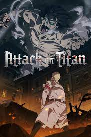
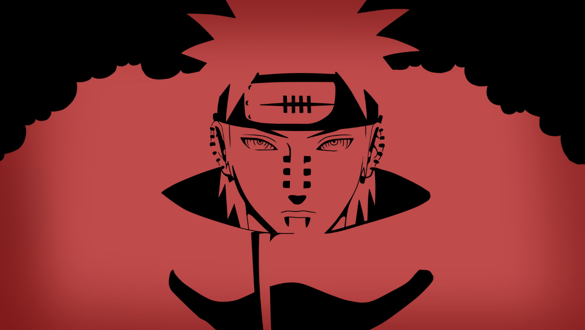

Let's see one by one
Attack_on_Titan
-->Attack on Titan (Japanese: 進撃の巨人, Hepburn: Shingeki no Kyojin, lit. 'The Attack Titan') is a Japanese dark fantasy anime television series, adapted from the manga of the same name by Hajime Isayama, that premiered on April 7, 2013. It has aired on NHK General TV in Japan,[g] and Aniplus Asia in various Asia-Pacific countries.[h] In the United States and Canada, the series has been streamed on Crunchyroll, Funimation, Netflix, Amazon Prime Video, and Hulu. Attack on Titan has also aired on Adult Swim's Toonami programming block in the U.S. Set in a post-apocalyptic world where the remains of humanity live behind walls protecting them from giant humanoid Titans, Attack on Titan follows protagonist Eren Jaeger, along with friends Mikasa Ackerman and Armin Arlert. When a Colossal Titan breaches the wall of their hometown, Titans destroy the city and eat Eren's mother. Vowing vengeance, Eren joins the elite Survey Corps, a group of soldiers who fight against Titans. Attack on Titan chronicles Eren's journey with the Survey Corps as they fight against the Titans while investigating their origin and history. Since its debut in 2013, Attack on Titan has received widespread critical acclaim and has notably sustained a broad, active, and international fan base. Critics and audiences have praised the show for its story line, animation, action sequences, characters, voice acting (both original and dubbed), soundtrack, and dark themes.
Your_lie_in_april
-->our Lie in April (Japanese: 四月は君の嘘, Hepburn: Shigatsu wa Kimi no Uso, lit.: "April is Your Lie") is a Japanese romantic drama manga series that was written and illustrated by Naoshi Arakawa, and has been adapted into an anime television series, a live-action movie, a light novel, and multiple stage productions. The manga was serialized in Kodansha's magazine Monthly Shōnen Magazine from April 2011 to February 2015. The story follows a young pianist named Kо̄sei Arima, who loses the ability to perform the piano after his mother's death, and his experiences after he meets violinist Kaori Miyazono.
manga series originated from a one-shot comic that Arakawa entered in a competition; he based the series on it and drew inspiration from the existence of musical manga, such as Beck and Nodame Cantabile. A-1 Pictures adapted Your Lie in April into an anime television series that was aired on Fuji TV's Noitamina block from October 2014 to March 2015, and an original video animation (OVA) episode was released in May 2015. A live-action film adaptation of the same name was released in September 2016. Your Lie in April received mixed reviews; several critics praised its plot and characters but criticized the artwork. Critics largely acclaimed the anime adaptation for its plot, animation, and soundtrack.
Naruto_series
-->This article is about the manga. For the title character, see Naruto Uzumaki. For other uses, see Naruto (disambiguation). Naruto Naruto Uzumaki doing a hand sign while there is a scroll in his mouth. First tankōbon volume cover, featuring Naruto Uzumaki NARUTO Genre Adventure[1] Fantasy comedy[1] Martial arts[2] Manga Written by Masashi Kishimoto Published by Shueisha English publisher AUS Madman Entertainment NA/UK Viz Media Imprint Jump Comics Magazine Weekly Shōnen Jump English magazine NA Weekly Shonen Jump Shonen Jump Demographic Shōnen Original run September 21, 1999 – November 10, 2014 Volumes 72 (List of volumes) Anime television series Naruto (2002–07) Naruto: Shippuden (2007–17) Media franchise List of Naruto media List of Naruto films List of Naruto video games Boruto: Naruto Next Generations Naruto[a] is a Japanese manga series written and illustrated by Masashi Kishimoto. It tells the story of Naruto Uzumaki, a young ninja who seeks recognition from his peers and dreams of becoming the Hokage, the leader of his village. The story is told in two parts – the first set in Naruto's pre-teen years, and the second in his teens. The series is based on two one-shot manga by Kishimoto: Karakuri (1995), which earned Kishimoto an honorable mention in Shueisha's monthly Hop Step Award the following year, and Naruto (1997). Naruto was serialized in Shueisha's magazine, Weekly Shōnen Jump from 1999 to 2014, and released in tankōbon (book) form in 72 volumes. The manga was adapted into an anime television series produced by Pierrot and Aniplex, which broadcast 220 episodes in Japan from 2002 to 2007; the English dub of the series aired on Cartoon Network and YTV from 2005 to 2009. Naruto: Shippuden, a sequel to the original series, premiered in Japan in 2007, and ended in 2017, after 500 episodes. The English dub was broadcast on Disney XD from 2009 to 2011, airing the first 98 episodes, and then switched over to Adult Swim's Toonami programming block in January 2014, starting over from the first episode. The English dub is still airing weekly on Adult Swim to this day. Viz Media began streaming the anime series on their streaming service Neon Alley in December 2012 on 99 episodes, and ended in March 2016, after 338 episodes. Besides the anime series, Pierrot has developed eleven movies and twelve original video animations (OVAs). Other Naruto-related merchandise includes light novels, video games, and trading cards developed by several companies. Viz Media licensed the manga and anime for North American production and serialized Naruto in their digital Weekly Shonen Jump magazine. The anime series began airing in the United States and Canada in 2005, and in the United Kingdom and Australia in 2006 and 2007, respectively. The films and most OVAs from the series were also released by Viz, with the first film premiering in movie theaters. The story of Naruto continues with Naruto's son, Boruto Uzumaki, in Boruto: Naruto Next Generations: Boruto wishes to create his own ninja way instead of following his father's. Naruto is one of the best-selling manga series in history having 250 million copies in circulation worldwide in 47 countries and regions, with 153 million copies in Japan alone and remaining 97 million copies elsewhere. It has become one of Viz Media's best-selling manga series; their English translations of the volumes have appeared on USA Today and The New York Times bestseller list several times, and the seventh volume won a Quill Award in 2006. Reviewers praised the manga's character development, strong storylines, and well-executed fight scenes, though some felt the fight scenes slowed the story down. Critics noted that the manga, which has a coming-of-age theme, makes use of cultural references from Japanese mythology and Confucianism.
Haikyuu!
-->Haikyu!! (ハイキュー!!, Haikyū!!, from the kanji 排球 "volleyball") is a Japanese manga series written and illustrated by Haruichi Furudate. It was serialized in Shueisha's shōnen manga magazine Weekly Shōnen Jump from February 2012 to July 2020, with its chapters collected in 45 tankōbon volumes. The story follows Shoyo Hinata, a boy determined to become a great volleyball player despite his small stature. An anime television series adaptation produced by Production I.G, aired on MBS from April 2014 to September 2014, with 25 episodes. A second season aired from October 2015 to March 2016, with 25 episodes. A third season aired from October 2016 to December 2016, with 10 episodes. A fourth season was announced during the Jump Festa '19 and was planned for release in two cours, the first cour of 13 episodes aired from January to April 2020, and the second cour of 12 episodes aired from October to December 2020. The anime film series titled Haikyu!! Final, has been announced, which serves as the finale of the series. In North America, the manga has been licensed by Viz Media, while the anime series has been licensed for digital and home release by Sentai Filmworks. Both the manga and anime have been met with positive responses. In 2016, Haikyu!! won the 61st Shogakukan Manga Award for the shōnen category. As of August 2022, the manga had over 55 million copies in circulation, making it one of the best-selling manga series.
| Anime | Male | Female |
|---|---|---|
| Attack_on_Titan | Eren Yeager | Mikasa |
| Your_Lie_in_April | Kosei Arima | Tsubaki |
| Naruto Shippuden | Naruto | Hinata |
| Haikyuu! | Hinata Shoyo | Yatchi |
| I Love♥ Anime! | ||